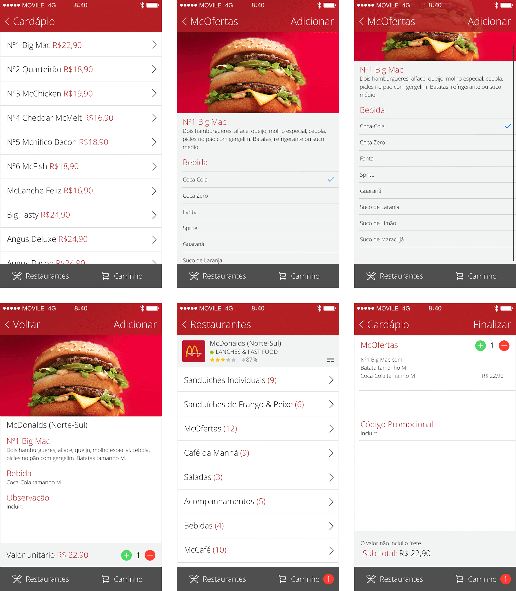
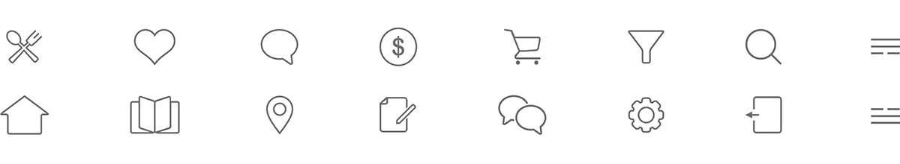
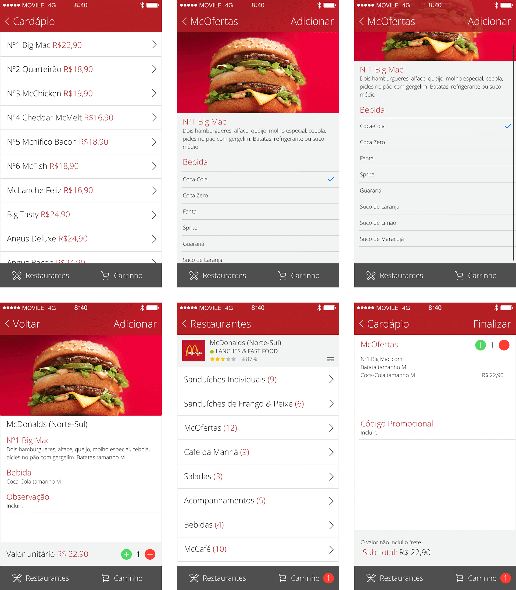
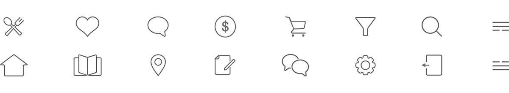

iFood
It was a big challenge in 2014 having to work on such ambitious project with huge growth potential and especially updating the UI from Skeuomorphism to Flat Design. I was the first designer to work for this new project, and also responsible for the visual concepts (iOS and Web), iconography and new features such as “Suggest Restaurants” which had huge users positive input leading to increase the range and variety of the suggested restaurant’s menu.
 


